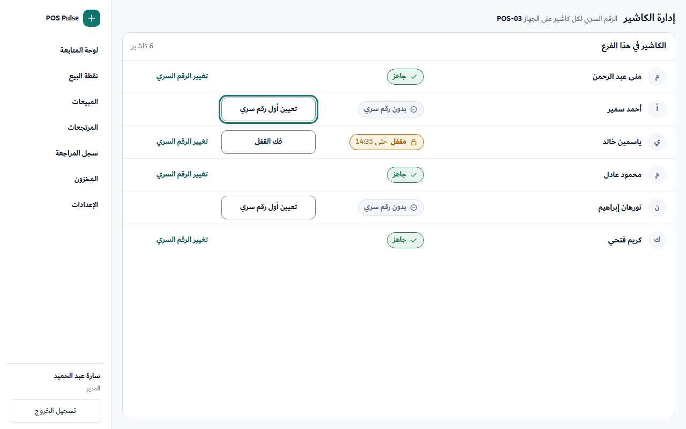
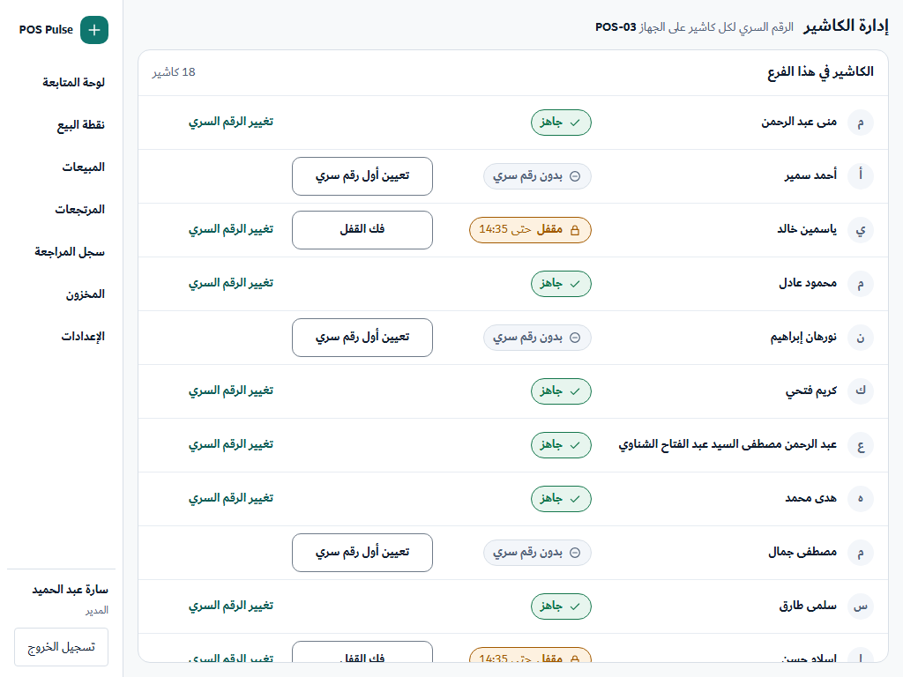
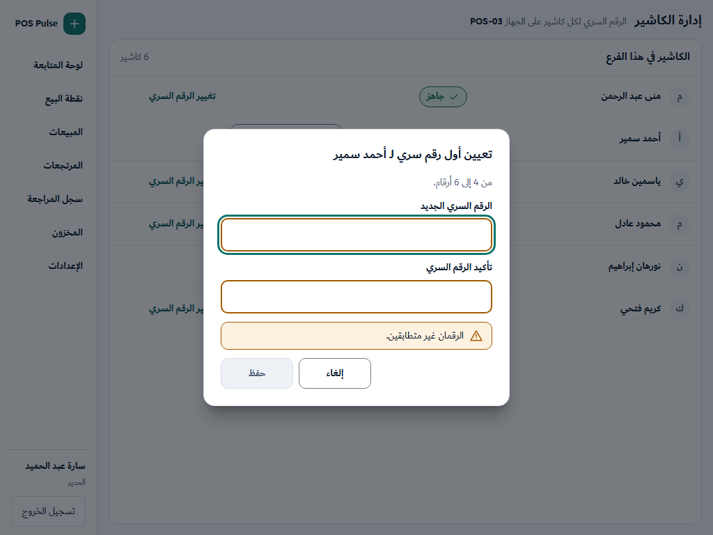
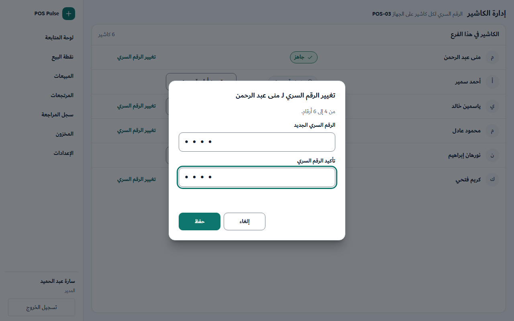
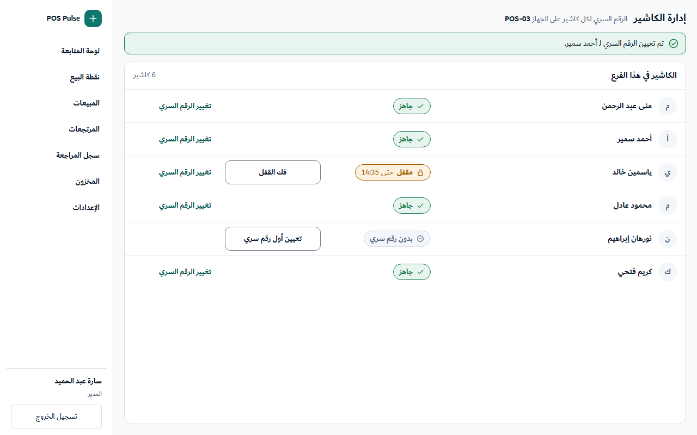
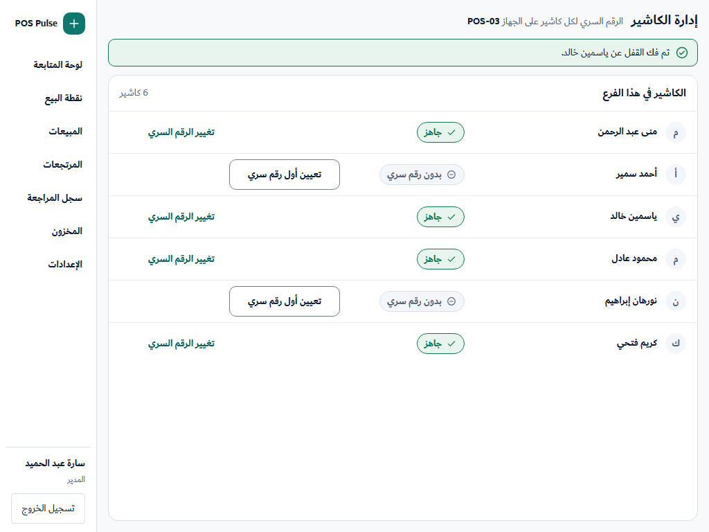
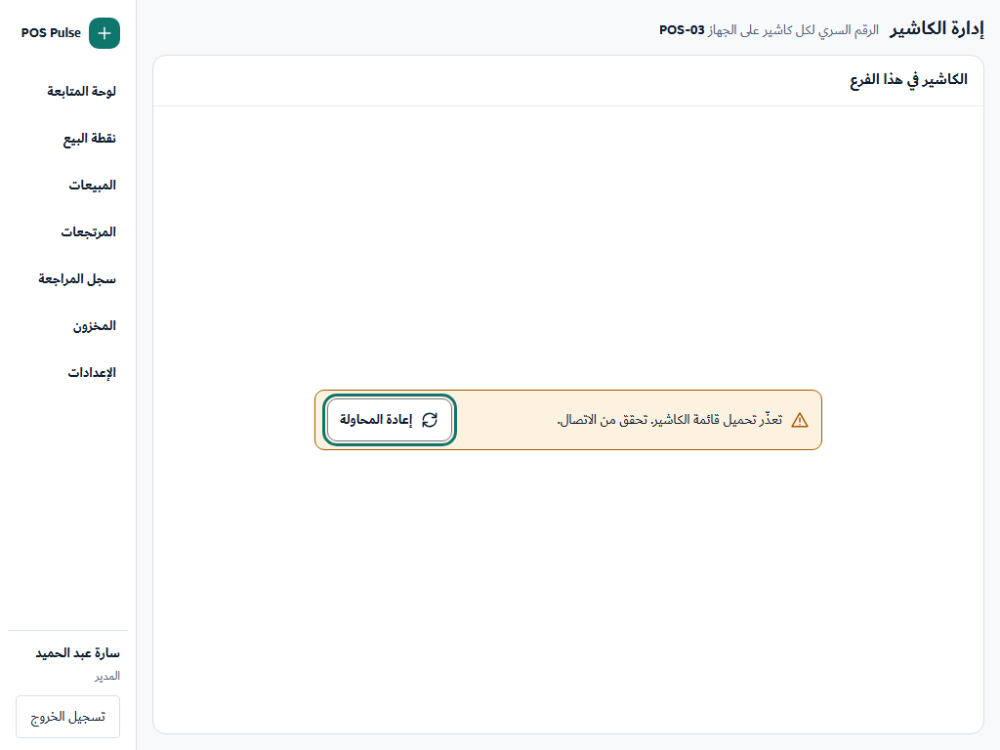
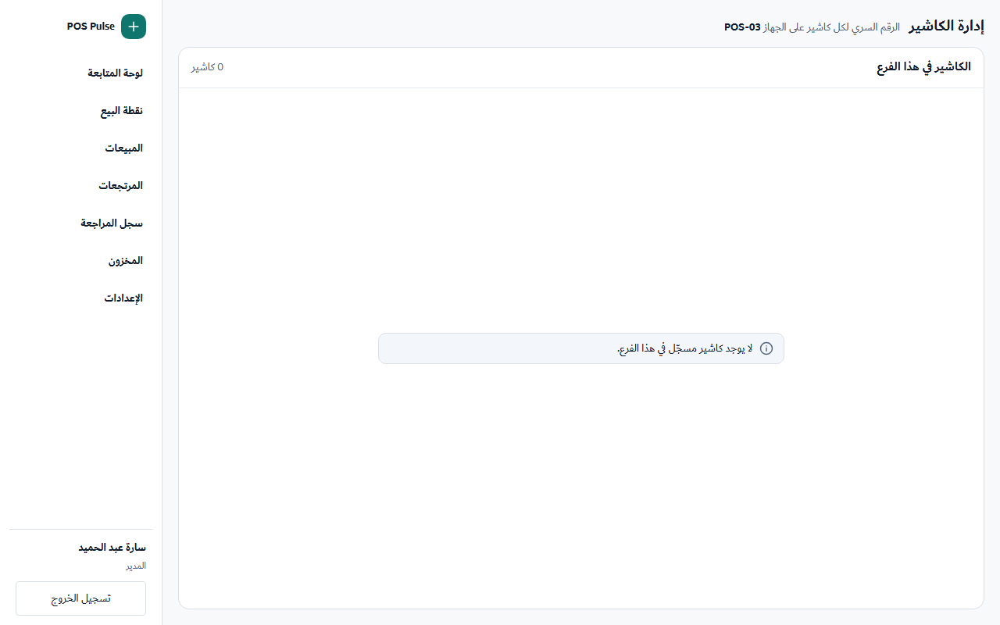
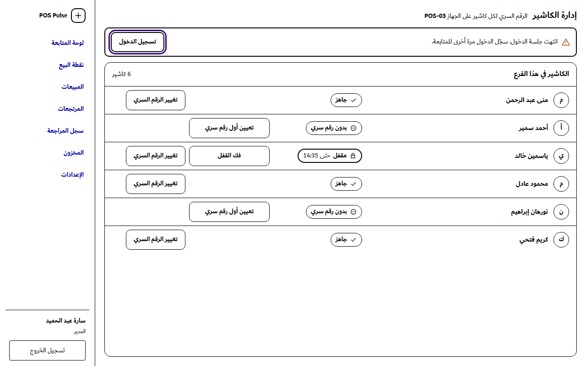

إدارة الكاشير (G-3): حالة الرقم السري لكل كاشير
معتمد من المالك (2026-10-12) · Jira RT-251 (D-M1) · الملخص: 19-d-m1-cashier-pin-status.md
وافق المالك يوم 2026-10-12 على الملخص وعلى القرارات D1 و D3 و D4. ثم وافق في اليوم نفسه على هذه المراجع وعلى كل النصوص المقترحة («موافق على الشكل والنصوص»).
الحالات العشر (1024 × 768 و 1280 × 800، فاتح وتباين عالٍ)









كل الملفات في هذا المجلد: G3-<State>-1024.html و -1280.html، والصور في
captures/.
ماذا يتغير عن الشاشة الحالية (RT-235)
- كل النصوص عربية. اليوم كلها إنجليزية.
- يظهر أمام كل كاشير وسم بحالته على هذا الجهاز. لكل حالة رمز خاص بها، فلا يعتمد معناها على اللون وحده.
- يظهر لكل حالة الزر الذي يصلح لها فقط، بدل الأزرار الثلاثة في كل صف:
- «تعيين أول رقم سري» لمن ليس له رقم.
- «فك القفل» للمقفل.
- «تغيير الرقم السري» لمن له رقم، وهو قرار D1.
- الأزرار في عمودين ثابتين، فتأتي على خط واحد في كل الصفوف.
- يظهر بجانب «مقفل» وقت انتهاء القفل، مثل «حتى 14:35». هذا قرار D3، والقفل ينتهي وحده بعد 5 دقائق.
- الرقم السري يُكتب مرتين للتأكيد، من 4 إلى 6 أرقام. زر «حفظ» معطّل حتى يكتمل الحقلان.
- الاسم الطويل يلتف على أكثر من سطر ويزيد ارتفاع الصف، ولا يُقص أبدًا، حتى لا يتشابه كاشيران.
- الشاشة تقرأ القائمة من جديد بعد كل عملية وعند «إعادة المحاولة». لا يوجد تحديث تلقائي متكرر.
النصوص (للموافقة)
| المكان | النص | الحالة |
|---|---|---|
| عنوان الشاشة | «إدارة الكاشير» · «الرقم السري لكل كاشير على الجهاز ‹الجهاز›» | العنوان يُعرض اليوم؛ السطر الثاني مقترح |
| عنوان القائمة | «الكاشير في هذا الفرع» · «‹n› كاشير» | مقترح (نفس عنوان شاشة الدخول) |
| الوسوم | «بدون رقم سري» · «جاهز» · «مقفل» + «حتى ‹HH:MM›» | الوسوم في 15؛ الوقت بقرار D3 |
| الأزرار | «تعيين أول رقم سري» · «فك القفل» · «تغيير الرقم السري» · «حفظ» · «إلغاء» · «إعادة المحاولة» | الأول والثاني في 15؛ الباقي مقترح |
| نافذة الرقم السري | «تعيين أول رقم سري لـ ‹الاسم›» / «تغيير الرقم السري لـ ‹الاسم›» · «من 4 إلى 6 أرقام.» · «الرقم السري الجديد» · «تأكيد الرقم السري» | مقترح |
| عدم التطابق | «الرقمان غير متطابقين.» | في 15 (M-K3) |
| طول غير صحيح | «الرقم السري من 4 إلى 6 أرقام.» | مقترح |
| نجاح | «تم تعيين الرقم السري لـ ‹الاسم›.» · «تم تغيير الرقم السري لـ ‹الاسم›.» · «تم فك القفل عن ‹الاسم›.» | الأول في 15 (M-K2)؛ الباقي مقترح |
| تعذّر التحميل | «تعذّر تحميل قائمة الكاشير. تحقق من الاتصال.» + «إعادة المحاولة» | معتمد (D4) |
| أول تحميل | «جارٍ تحميل القائمة…» | مقترح (بدون صورة؛ عند إعادة القراءة تبقى الصفوف والأزرار معطّلة) |
| القائمة فارغة | «لا يوجد كاشير مسجّل في هذا الفرع.» | نفس نص شاشة الدخول |
| تعذّر التفعيل (داخل النافذة) | «لا يمكن تفعيل هذا الكاشير الآن. تواصل مع المشرف.» | مقترح |
| فشل عام | «تعذّر تنفيذ العملية. حاول مرة أخرى.» | مقترح |
| انتهاء الجلسة (M6) | «انتهت جلسة الدخول. سجّل الدخول مرة أخرى للمتابعة.» + «تسجيل الدخول» | معتمد (RT-247) |
‹الاسم› و ‹الجهاز› نص حر يكتبه المشرف، فيُعرض داخل <bdi>. لا يحمل أي نص رقمًا سريًا ولا معرّفًا.
ملاحظات للمراجعة
- شاشة الكاشير ليس لها عنصر في القائمة الجانبية اليوم، وتُفتح من رابط في لوحة المتابعة. لذلك لا يظهر أي عنصر محددًا في المرجع. إضافة عنصر للقائمة خارج نطاق هذه التذكرة.
- حد الارتفاع 1024×600 غير مرسوم، لأن المراجع صفحات بحجم ثابت. يُفحص في البرنامج الحقيقي عند التنفيذ: القائمة تتحرك داخل اللوحة، والنافذة تتحرك داخل الخلفية.
- «تغيير الرقم السري» لكاشير مقفل يفك القفل أيضًا، فيصبح الصف «جاهز» بعد الحفظ.
- «جاهز» يعني فقط أن الرقم السري موجود على هذا الجهاز وغير مقفل. لا يضمن نجاح الدخول، فقد يُرفض الدخول لأسباب أخرى مثل عدم الاتصال.
- الفحص الآلي لكل حالة، على العرضين وبالوضع الفاتح:
- كل شيء داخل الإطار، ولا يخرج صف عن عرضه.
- لا نص أصغر من 12px، ولا زر أصغر من 44×44.
- axe: صفر مخالفات.
- كل اسم يظهر كاملًا ولا يُقص.
- وراء نافذة الرقم السري، لا يمكن الوصول بالـ Tab لأي زر أو رابط خارجها، ولا حتى القائمة الجانبية.
- صور وضع التباين العالي محاكاة Chromium (
forcedColors: 'active')، وليست سمة Windows الحقيقية.